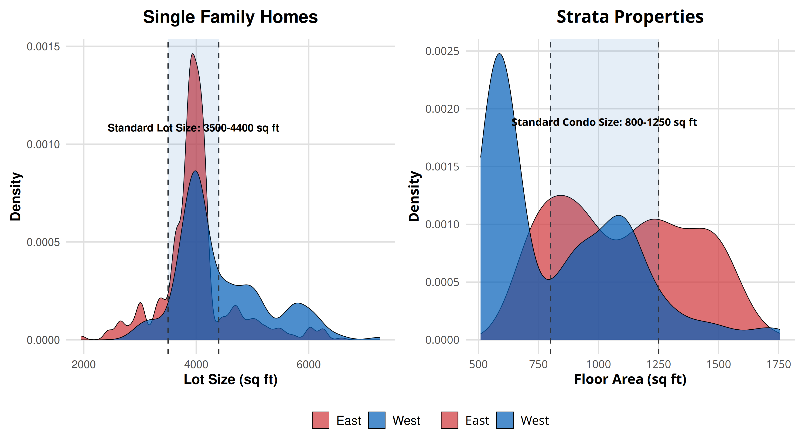

| Dependent Variable | Coefficient | Std. Error | Economic Interpretation |
|---|---|---|---|
| Cash Holdings | 0.1180 | 0.0761 | More diversified REITs hold less cash |
| Leverage | 0.0081 | 0.0031 | Lower leverage ratios |
| DSCR | -0.0855 | 0.0332 | Lower debt service coverage |
| Operating Efficiency | -0.0004 | 0.0001 | Higher operating efficiency |
| Operating Efficiency (with controls) | -0.0002 | 0.0001 | Half of effect explained by cash/leverage |
Proposal Defence
Daryl Larsen
Chapter 1: The Value of W
Motivation: Willingness to Pay for Prestige
Luxury goods carry substantial price premiums.
How much of this premium is attributable to prestige rather than quality?
Difficult to answer because prestige and quality are typically highly correlated.
Prestigious Neighbourhoods
Certain neighbourhoods and cities carry more prestige and thus price premiums.
Not just ultra-rich neighbourhoods, nearly every city has areas considered better or more prestigious than others.
How much of this premium is attributable to prestige rather than quality?
Difficult to answer because prestige and quality are correlated.
- Access to jobs
- Amenities
- School quality
The Value of W: Vancouver’s East-West Divide
We estimate the value associated with living on the West side of Vancouver using spatial RDD
- Vancouver’s West side has historically been perceived as higher-status
- The East-West boundary follows Ontario Street - a small residential street
- Addresses provide a clear division (W vs E in street addresses)
- This East-West divide pattern exists in many cities globally
East and West Vancouver
East and West Vancouver divided by Ontario Street
Ontario Street: The Clear Boundary
Ontario Street serves as the clear divide between East and West Vancouver
Key Results: The Value of W
46.5% premium for single-family homes in the entire west side compared to east side counterparts (controlling for lot size, floor area, and built year). The premium reflects both neighbourhood quality and prestige.
19% premium for single-family homes due to the RDD (i.e., prestige) effect alone.
Strata/condo properties show smaller effects (20% and 12.6%)
Effect is stronger for homes with W in their address
RDD within Census Tract
RDD bandwidth: 300-meter (150m to each side)
- Away from school catchment area borders and Main Street.
CT (Census Tract) fixed effects
- The treatment effect is identified by W and E variation within CT.
Summary Statistics
Summary statistics for properties near Ontario Street
Baseline Regression Results
Main regression results showing West side premium
Robustness: Effects Over Time
West side premium persists across decades (2000-2023)
Robustness: Placebo Tests
Placebo tests: Ontario Street vs. other North-South streets
Property Size Distributions
Property size distributions by East/West location
Conclusion: The Value of W
We estimate significant willingness to pay for prestige associated with living in west Vancouver using spatial RDD.
Our setting is ideal for spatial RDD because the boundary is well-defined and does not overlap with other major boundaries
Prestige effect is economically large:
- 19% premium for single-family homes due to prestige alone
- Effect persistent over decades (2000-2023)
- Robust to various specifications and placebo tests
Implications for understanding housing markets and urban inequality:
- Prestige can create persistent neighbourhood premiums
- Address signals matter for property values
- Spatial regression discontinuity provides clean identification of prestige effects
Chapter 2: Which is More Important for CRE: Concentration of Operations, or Geographic Diversification?
Motivation: REITs Face a Trade-off
Empire State Realty Trust 
Orion Office REIT 
Research Question: Is there a benefit to geographic spread in real estate portfolios? What is the channel through which costs and benefits operate?
The REIT Context
Real Estate Investment Trusts (REITs): - Companies that own income-producing real estate (~$5 trillion in US assets) - Must pay out 90% of taxable income as dividends (50-75-90 rule) - Cannot hold cash like typical corporations
Key Insight: REITs face higher costs to holding cash, so they may look for other ways to protect against future cash flow risks, such as diversification
Geographic Diversification Trade-offs
Pros: - Mitigate geographic risk (unemployment, income, rents determined locally) - Strong regional heterogeneity in recent recessions - Portfolio diversification benefits
Cons: - Inefficiencies in managing dispersed properties - Distant buyers pay premiums - Local investors earn better returns (fill vacancies faster)
Literature consensus (pre-2000s): Costs of diversification outweigh benefits for REITs
A Better Measure of Diversification
Problem with HHI: \(\text{HHI} = \sum_{j=1}^JP_j^2\) - Treats all spatial units symmetrically - No control for property type agglomeration - Mixing spatial scales
Solution: Duranton-Overman (2005) approach 1. Compute bilateral distances between all REIT properties 2. Compare with counterfactual random portfolio of same size/type 3. Generate localization (\(\Gamma\)) and dispersion (\(\Psi\)) indices
Example: Equity Residential
EQR owns 293 multifamily properties in Boston, NYC, DC, Seattle, San Francisco, and Southern California

EQR Property Locations
Duranton-Overman vs HHI

Comparison of diversification measures
REITs Have Increased Geographic Spread
| Year | Observations | MSA HHI | State HHI |
|---|---|---|---|
| 2021 | 134 | 0.161 (0.236) | 0.219 (0.225) |
| 2010 | 110 | - | 0.25 (0.24) |
| 2000 | 114 | 0.271 (0.262) | - |
REITs have systematically reduced concentration over the past two decades
Key Results: Diversification Benefits
Stock Market Performance: - Lower volatility (8 basis points) - Lower returns (-17 basis points) - Better COVID resilience
Operating Performance: - Higher operating efficiency - Lower leverage - Less cash holdings
Property Type Effects: - Retail REITs most localized - Multifamily REITs most dispersed - Industrial showing diversification benefits
Robustness: - Duranton-Overman outperforms HHI in explanatory power - Effects persistent across specifications
Operating Efficiency and Financial Channels
Conclusion: Geographic Diversification Creates Value
Unlike previous literature, I find net benefits to geographic diversification for REITs using improved measures
19% of diversification effect on operating efficiency flows through cash flow stability and lower leverage
Technology and market changes since 2000s have shifted the cost-benefit balance:
- Better monitoring of distant properties
- Increased geographic heterogeneity in economic shocks
- Tighter lending conditions reward cash flow stability
Policy implications: REITs’ legal structure creates incentives for efficient geographic diversification
Chapter 3: Congestion Pricing and the local economy
Motivation
Implementing the planned congestion pricing system risks too many unintended consequences for New Yorkers at this time.
— Governor Kathy Hochul, June 5, 2024
- Congestion pricing is a powerful tool for saving time and reducing pollution
- But it likely involves fewer visits to an area, potentially harming businesses
- Cordon pricing in particular can shape the economic geography of a city
This paper
- I analyze the impact of congestion pricing on businesses in New York City
- Use a Spatial DiD approach to estimate the effect on visits
- Compare effects across location and types of businesses
- I analyze the impact of congestion pricing on residents of the New York City (planned)
- Use the network structure of the data to see how different types of residents are affected
- Identify winners and losers from congestion pricing
- I build a structural model of location choice to understand how congestion pricing affects the economic geography of New York City (planned)
- Use the model to simulate the effects of congestion pricing on resident and business location decisions
- Counterfactual designs to maximize welfare
Data
- SafeGraph Spend Patterns
- Aggregated transaction data at each business
- Includes reported income and home location of customers at city level
- Repeat customers
- SafeGraph Places
- Business locations in NYC
- Includes name, geometry, and NAICS code
Data
- Advan monthly patterns (in progress)
- Cell phone location data
- Monthly visit counts and origins of visitors to businesses in NYC
- Roughly 10% sample of population ([Arancibia et al., 2024])
- Limit to businesses with at least 1 visit in each month
Literature Review
- Congestion pricing
- Theory: [Vickrey, 1969], [Arnott, de Palma, and Lindsey, 1990, 1991, 1993]
- Empirical:
- London ([Glaister and Graham, 2002], [Leape, 2006], [Green et al., 2016] [Tang, 2016])
- Stockholm ([Eliasson et al., 2012], [Daunfeldt et al., 2009])
- Singapore ([Agarwal, Koo, and Sing, 2015])
- Congestion pricing effect on businesses
- Spatial difference-in-differences
- [Butt, 2024]
- My contribution: Analyze effect on businesses with more complete data and more robust methods than previous studies. Build structural model to show how congestion pricing affects business location decisions and the economic geography of New York City.
Background
- Congestion pricing zone (CPZ) implemented January 5, 2025
- Boundaries at 60th Street, FDR Drive and West Side Highway exempted
- $9 daytime, $2.50 nighttime tolls for passenger vehicles, $1.50 surcharge for rideshare, $0.75 for taxis
- Daytime pricing 5am-9pm weekdays, 9am-9pm weekends
SafeGraph Spending Analysis: Revenue Effects
Building on the visit analysis, I examine actual spending patterns using SafeGraph Spend data to understand the economic impact on businesses.
SafeGraph Spending Data Overview
|
|
|---|---|
| Data Characteristic | Value |
| Total observations | 224,688 |
| Businesses inside CPZ | 38,688 (17.2%) |
| Businesses outside CPZ | 186,000 (82.8%) |
| Pre-treatment observations | 177,878 (79.2%) |
| Post-treatment observations | 46,810 (20.8%) |
| Panel structure | Balanced - 24 months per business |
SafeGraph Spending: Difference-in-Differences Results
Using transaction-level spending data, I find consistent evidence of negative effects on business revenue, with some heterogeneity across spending measures.
Congestion Pricing Zone × Post Treatment
|
||
|---|---|---|
| Fixed Effects | Log Physical Spend | Log Physical Transactions |
| Basic DiD (No FE) | -0.0521 (0.0197) | -0.0563 (0.0197) |
| NAICS + Month FE | -0.0521 (0.0197) | -0.0563 (0.0197) |
| Sector + County×Month FE | -0.0406 (0.0152) | -0.0435 (0.0152) |
| Sector×County×Month FE | -0.0401 (0.0152) | -0.0432 (0.0152) |
| Sector×Tract + Tract×Month FE | -0.0384 (0.0183) | -0.0442 (0.0183) |
| NAICS + Tract×Month + Date FE | -0.0384 (0.0183) | -0.0442 (0.0183) |
SafeGraph Spending: Key Findings
Physical Spending Effects: - 3.8-5.2% decline in physical spending at CPZ businesses - Effects are robust across different fixed effect specifications - Smaller magnitude than visit effects, suggesting spending per visit may have increased
Physical Transactions Effects: - 4.4-5.6% decline in physical transactions - Consistent with visit pattern results from Advan data - Validates findings using independent data source
SafeGraph Spending: Spatial Spillover Effects
Following the same ring-based analysis as with visits, I examine how spending effects vary by distance from the CPZ boundary.
| Distance Ring | N Businesses | Physical Spend Effect | Physical Transactions Effect |
|---|---|---|---|
| CPZ (Inside) | 1612 | -0.0178 (0.0152) | -0.0262 (0.0112) * |
| Ring 1 (0-5km) | 1957 | 0.0243 (0.0195) | 0.0304 (0.0138) . |
| Ring 2 (5-15km) | 2526 | 0.0675 (0.0257) * | 0.0703 (0.0220) ** |
| Ring 3 (15-30km) | 1966 | 0.0662 (0.0196) ** | 0.0706 (0.0122) *** |
| Ring 4 (30-110km) | 1301 | Reference | Reference |
| Note: | |||
| Standard errors in parentheses. Significance: *** p<0.001, ** p<0.01, * p<0.05, . p<0.1 |
SafeGraph Spending: Interpretation
Spatial Pattern of Effects:
- Inside CPZ: Small negative effect on spending (-1.8%) vs larger effect on transactions (-2.6%)
- Suggests people visit less but may spend slightly more per visit
- Adjacent Areas (0-15km): Positive spillover effects
- Businesses just outside the zone benefit from diverted economic activity
- Ring 2 (5-15km) shows largest gains: +6.8% spending, +7.0% transactions
- Economic Interpretation:
- Net economic effect may be smaller than visit data alone suggests
- Spatial redistribution of economic activity rather than pure loss
- Some evidence for “quality over quantity” - fewer but potentially higher-value visits
Customer Demographics: Income and Repeat Patterns
The SafeGraph data includes rich information about customer characteristics, allowing analysis of how different demographic groups respond to congestion pricing.
Available Customer Demographic Analysis
|
||
|---|---|---|
| Customer Metric | Description | Data Format |
| Repeat Customers | Visit frequency (1, 2, 3, 4, 5-10, >10 visits) | Long format: placekey, date, variable, key, value |
| Customer Income | Income brackets (<$25k, $25-45k, $45-60k, $60-75k, $75-100k, $100-150k, >$150k) | Long format: placekey, date, variable, key, value |
| Mean Spend by Income | Average spending per customer by income bracket | Long format: placekey, date, variable, key, value |
| Home City | Customer home city (for geographic network analysis) | Network format: placekey, date, home_city, customer_count, share |
Next Steps: Enhanced Customer Analysis
- Customer Demographics Analysis ✓ Data Prepared
- Analyze how effects vary by customer income level
- Examine changes in repeat customer patterns
- Test hypothesis: Higher-income customers less price-sensitive
- Geographic Customer Networks ✓ Data Prepared
- Map changes in customer origins (home cities)
- Identify which areas see largest changes in CPZ business patronage
- Network analysis of visitor flow changes
- Business Heterogeneity Analysis
- Effects by sector (restaurants, retail, services)
- Catchment area size and customer base characteristics
- Business adaptation strategies (delivery, pricing changes)
CPZ Impact: Timeline Analysis
January usually sees fewer visits, but 2025 seems to have been particularly bad for businesses in the CPZ.
CPZ Impact: Difference-in-Differences Analysis
Taking the coefficients from a difference-in-differences regression of visits on postXcounty, we can see that businesses in the metropolitan division saw more visits except in Manhattan and the Bronx, nearest the CPZ. Brooklyn in particular seems to have benefitted.
CPZ Impact: Difference-in-Differences Analysis
I run a standard pooled difference-in-difference regression of ln(visits) on Post-Treated with different fixed effects. There was a large decline in visits to businesses in the CPZ which is only partially explained by seasonality.
| Coefficient | Std. Error | Fixed Effects |
|---|---|---|
| -0.2228 | 0.0287 | NAICS + Date |
| -0.1708 | 0.0294 | Sector + County Seasonality |
| -0.1702 | 0.0297 | Sector-County Seasonality |
| -0.1631 | 0.0346 | Sector-Tract + Tract Seasonality |
| -0.1631 | 0.0346 | NAICS + Date + Tract Seasonality |
CPZ Impact: Spatial DiD with spillovers (Butt, 2024)
The previous analysis assumes that only businesses in the CPZ are affected by the congestion pricing. However, spillover effects are virtually guaranteed in any spatial setting. To account for this, I follow Butt (2024) and estimate the effects of congestion pricing within the CPZ as well as in increasingly large rings around the CPZ. Here, the negative effect on visits exists but, perhaps surprisingly, is largest just outside of the CPZ.
| Ring | Effect | Std. Error |
|---|---|---|
| CPZ (Inside) | -0.0775 | 0.0508 |
| Ring 1 (0-5km) | -0.2164 | 0.0530 |
| Ring 2 (5-15km) | -0.1578 | 0.0270 |
| Ring 3 (15-30km) | -0.0787 | 0.0260 |
CPZ Impact: Ring Effects
CPZ Impact: Treatment Effects by Distance
Manhattan Spatial RDD: Year-over-Year Changes
Manhattan Spatial RDD: By Month
Manhattan Spatial RDD
Negative effect felt most strongly near the 60th street boundary. - This is consistent with the idea that amenity benefit to pedestrians are felt most strongly well inside the zone - Perhaps negative amenity near the boundary from people trying to avoid the toll
Footnotes
JUE, not actually study of businesses but finds substantial increase in land values within the zone
JUE, difference in difference, find 20% drop in retail real estate prices
Transport Policy, Descriptive analysis of effect at one store, finds 5.5-8.2% drop in sales
Transportation Research Part A, difference-in-differences analysis of 14 shopping malls during the Stockholm congestion pricing trial, find no effect
Proposal Defence